Windows headless visual study · October 27, 2026
Partial experiment. Portable Rust/MSVC/SDK installed without admin rights. Native build helpers could not execute (Access denied); Rust/Macroquad and Tauri remain blocked. These screenshots show PixiJS in headless Windows Edge using the RTX 3080. No visible browser windows were opened.
Eight browser fixture tests passed, with deterministic seeks, frozen stale/reduced-motion scenes, six-timestamp animation-player pixel parity, selection and resizing checks. The 100-actor layout is a readability failure. The art is V2-inspired test art with incomplete direction coverage.
180 intervals per case after warm-up. The proposed 60 FPS budget is not demonstrated; no renderer selection follows from this study. These are headless scheduling intervals, not a native-app benchmark.
| Actors | Frame selection | Frame p95 | CPU submission p95 |
|---|---|---|---|
| 2 | sampler | 18.50 ms | 0.50 ms |
| 2 | library | 19.70 ms | 0.50 ms |
| 20 | sampler | 18.50 ms | 0.50 ms |
| 20 | library | 18.30 ms | 0.40 ms |
| 100 | sampler | 18.30 ms | 0.50 ms |
| 100 | library | 18.60 ms | 0.50 ms |
Full review and limitations · Raw results
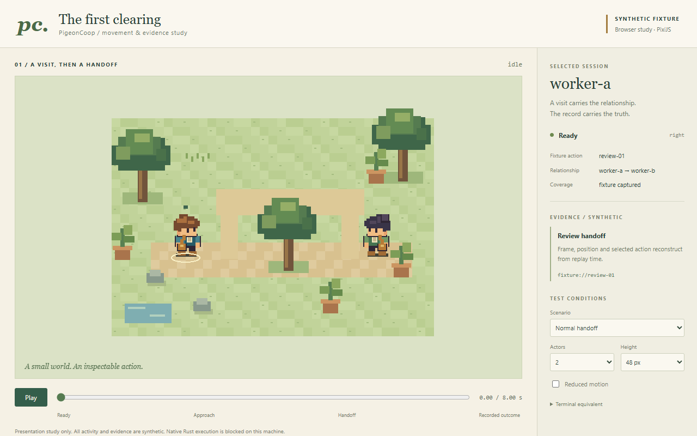
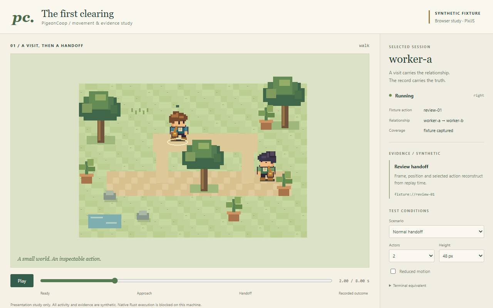
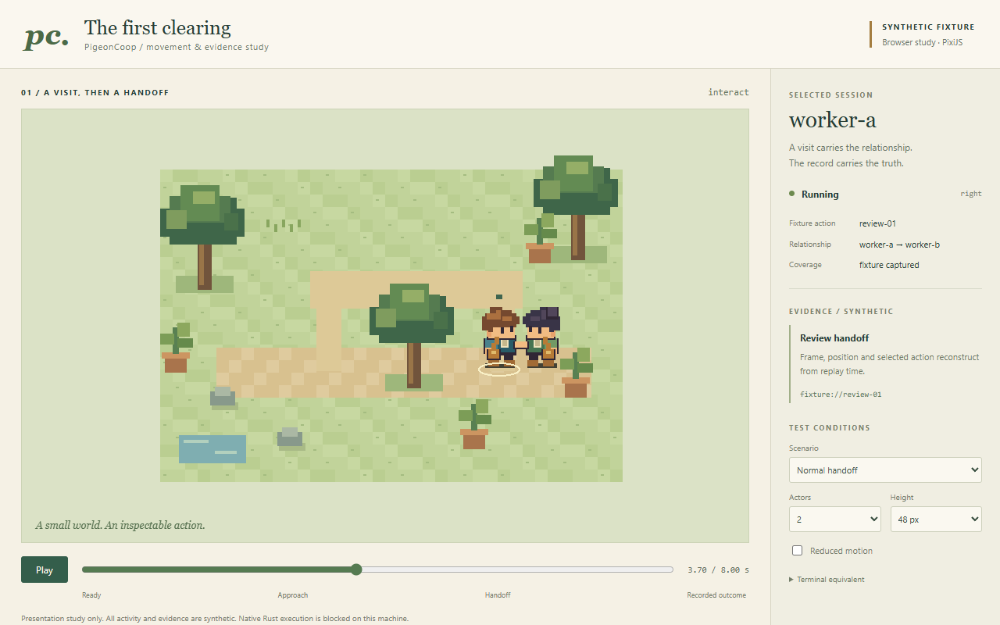
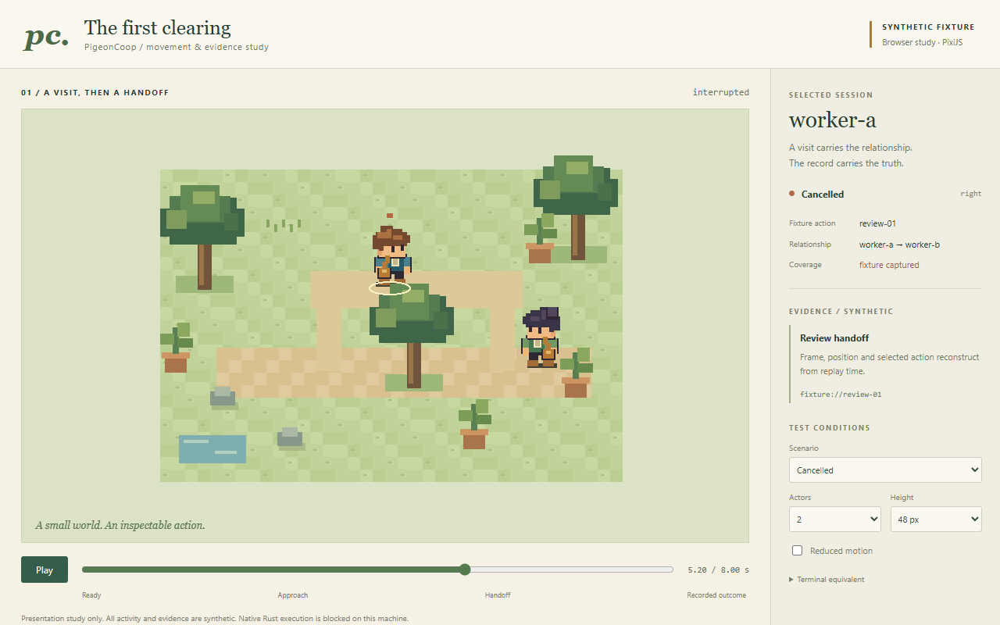
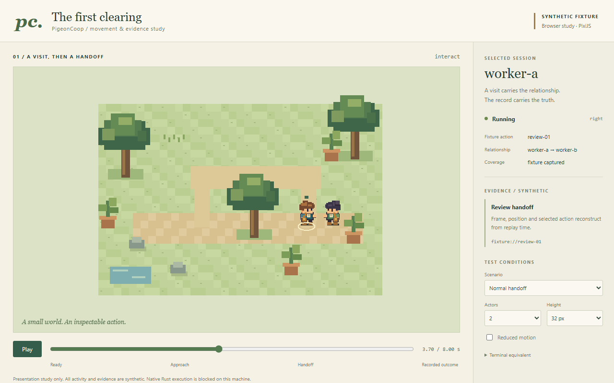
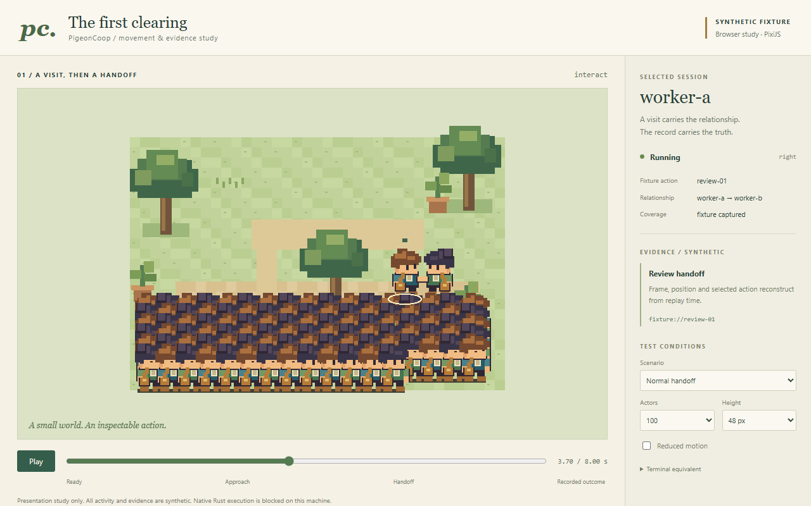
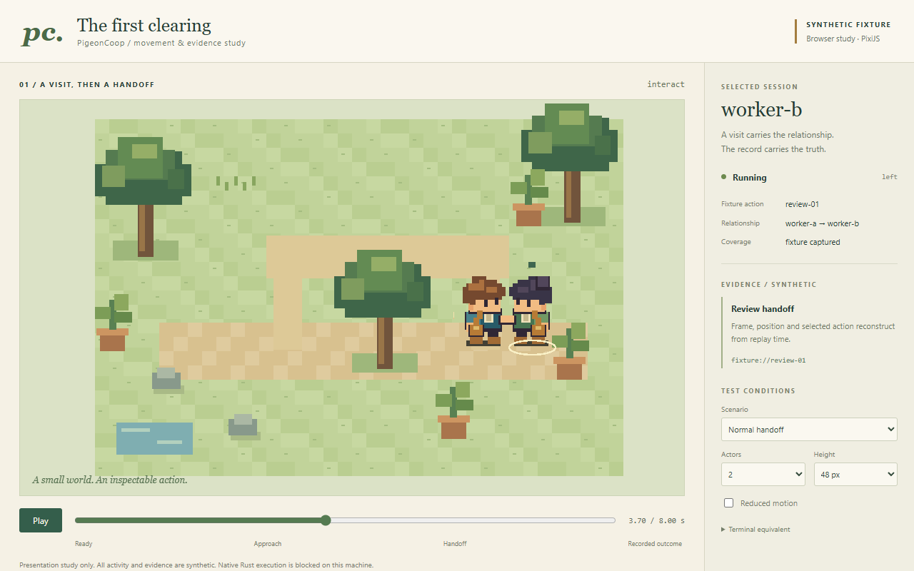
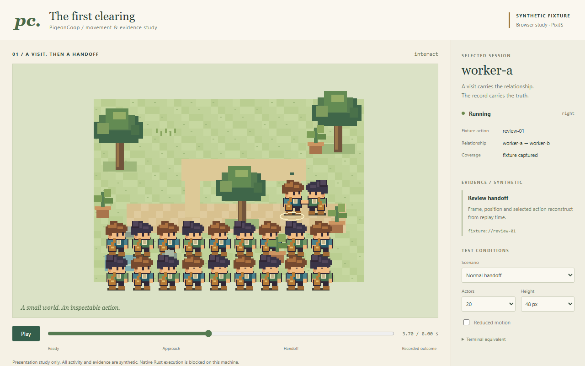
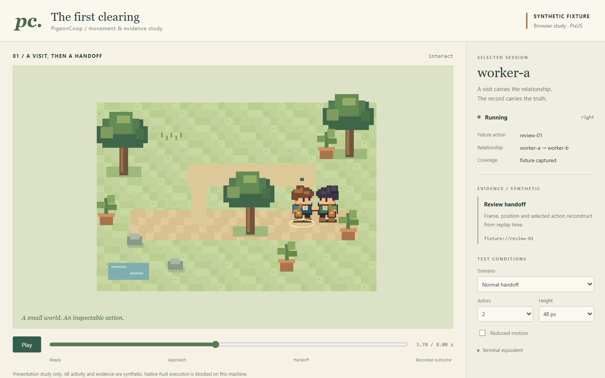
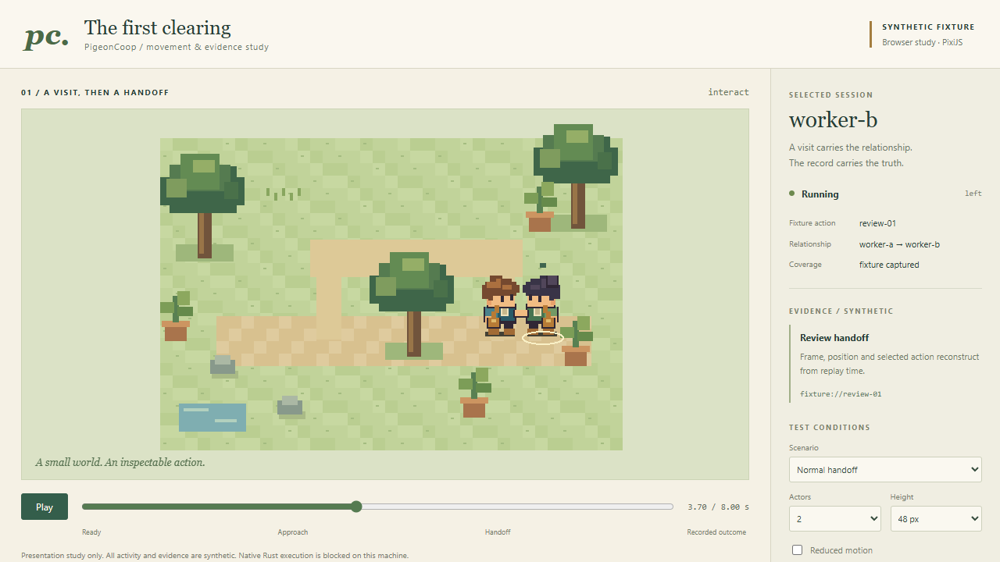
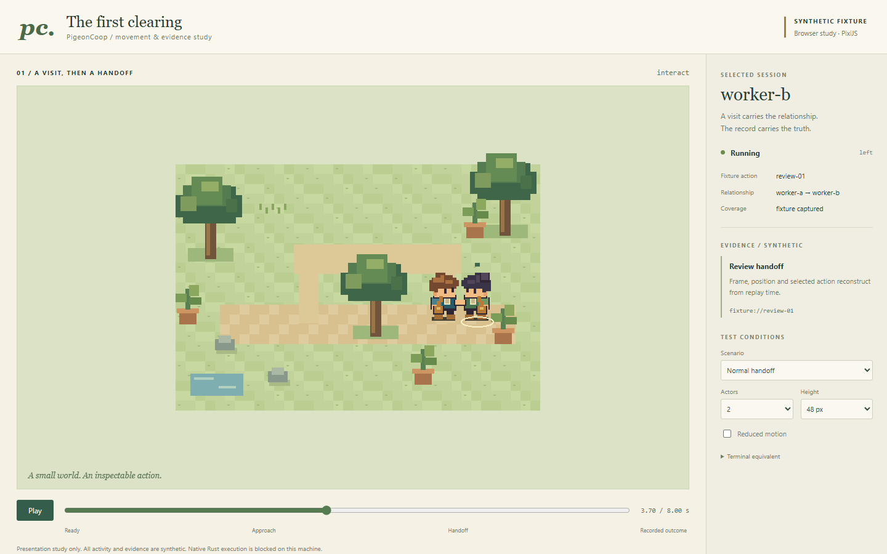
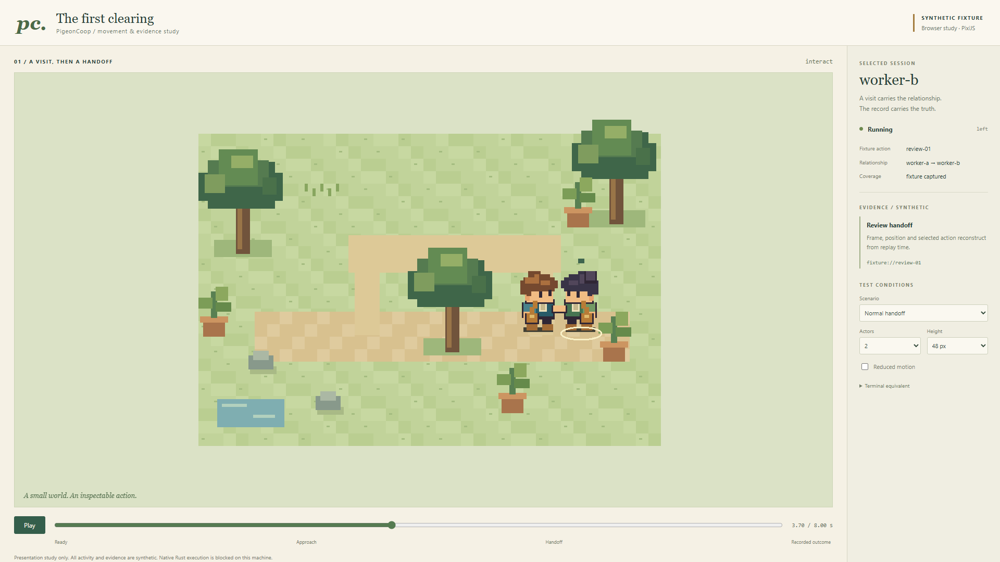